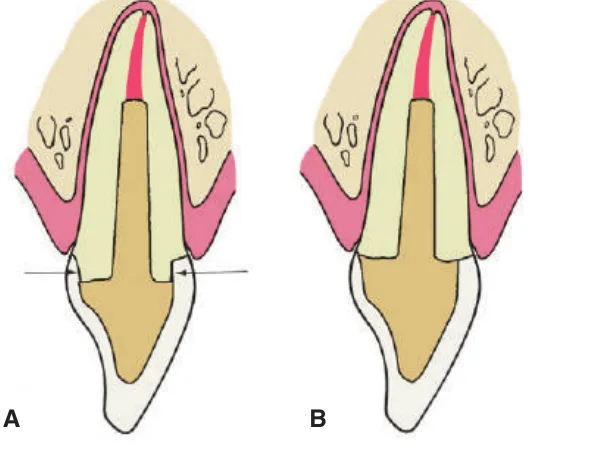

نسخه استخراجشده؛ ترجمه یا تأیید علمی انجام نشده است. وضعیت: captured
طراحی موفق پست و کور شش ویژگی دارد — این فهرست محور کل یونیت است:
و دربارهی ویژگی دوم، صریحترین هشدار این است: «وقتی فضای پست ساخته میشود، تنها حداقل ساختار دندانی باید از کانال برداشته شود. بزرگ کردن بیش از حد میتواند ریشه را پرفوره یا تضعیف کند، که سپس ممکن است حین سمان کردن پست یا عملکرد بعدی بشکافد.»
و متغیر تعیینکننده را نام میبرد: «ضخامت عاج باقیمانده، متغیر اصلی در مقاومت به شکست ریشه است.» و شواهد عددیاش: در آزمون ضربه، دندانهای با پست ضخیمتر (۱٫۸ میلیمتر) — یعنی دیوارههای عاجی نازکتر — آسانتر شکستند از دندانهای با پست نازکتر (۱٫۳ میلیمتر).
و قیاس حلقه — تصویری که این مبحث را با آن به یاد میآوری: «ریشه را میتوان با یک حلقه مقایسه کرد: استحکام یک حلقه متناسب با تفاوت توانهای چهارم شعاعهای داخلی و خارجیاش است. این یعنی استحکام یک ریشهی آمادهشده از محیطش میآید، نه از درونش — و بنابراین یک پست با اندازهی معقول نباید ریشه را بهطور معنادار تضعیف کند.»
ولی بلافاصله عمل را از نظریه جدا میکند: «با این حال، بزرگ کردن یکنواخت یک کانال ریشه و قضاوت دقیق دربارهی اینکه چقدر ساختار برداشته شده و ضخامت عاج باقیمانده چقدر است، دشوار است.»
و دو واقعیت آناتومیک که خطر را پنهان میکنند: «بیشتر ریشهها مزیودیستالی باریکتر از فاسیولینگوالیاند و اغلب تقعرهای پروگزیمالی دارند که در رادیوگرافی پریاپیکال دیده نمیشوند.» و در آزمون آزمایشگاهی، «بیشتر شکستهای ریشه از همین تقعرها آغاز میشوند، جایی که ضخامت عاج باقیمانده کمینه است».
و قاعدهی عملی حاصل: «کانال ریشه باید تنها بهاندازهای بزرگ شود که پست بهدقت جا شود، در حالی که استحکام و گیر تضمین میگردند.» و در طول یک فضای پست مخروطی، «بزرگ کردن بهندرت نیاز دارد از یک یا دو شماره فایل فراتر از بزرگترین شمارهی مصرفشده در درمان اندودنتیک تجاوز کند».

مهمترین جملهی این درس: «مقدار ساختار دندانی باقیمانده احتمالاً مهمترین پیشبین موفقیت بالینی است.»
و چرا حفظش اهمیت دارد: «هر تلاشی باید برای حفظ هرچه بیشتر ساختار تاجی انجام شود چون به کاهش تمرکز تنش در لبهی لثهای کمک میکند.»
و یک قید عملی که در جهت مخالف میکشد: وقتی پست و کور ریختگی برنامهریزی شده، «چنین دیوارههایی باید یکپارچگی ساختاری کافی داشته باشند تا حین پروو و ارزیابی ترمیم نشکنند. اغلب این یعنی دیوارهها باید کوتاه شوند تا استحکام تضمین گردد.»
و عدد کلیدی: «اگر بیش از ۲ میلیمتر ساختار تاجی باقی بماند، طراحی پست احتمالاً نقش محدودی در مقاومت به شکست دندان ترمیمشده دارد.» — یعنی بالای این آستانه، ساختار خودِ دندان تعیینکننده است، نه پست تو.
و یک محکومیت صریح از یک عادت قدیمی: «کاهش تاجی تا سطح لثه پیش از ساخت پست و کور، که زمانی رایج و روتین بود، عمل بدی است و باید اجتناب شود.»
و تعریف فرول: «امتداد دیوارهی محوری روکش آپیکالیتر از ساختار از دست رفته، چیزی را فراهم میکند که بهعنوان ترمیم با فرول شناخته میشود — که بهعنوان یک نوار یا حلقهی فلزی که به ریشه یا تاج دندان جا میشود تعریف میگردد، در برابر روکشی که صرفاً مادهی کور را احاطه میکند.»
و کارکرد ادعاییاش: «تصور میشود به به هم بستن ساختار باقیماندهی دندان کمک کند، و همزمان از شکست ریشه حین عملکرد جلوگیری کند» — ولی صادقانه باید افزود: «هرچند شواهد علمی بههیچوجه قطعی نیست.»
و مهمترین مصالحهی این درس — سه راه ساختن فرول و بهای هر کدام:
و این پرسش هنوز باز است: «روشن نیست که آیا پروگنوز با ایجاد فرول در یک دندان بهشدت آسیبدیده از راه افزایش طول تاج جراحی بهبود مییابد یا نه» — چون هرچند جراحی ساخت روکش با فرول را ممکن میکند، «به نسبت تاج به ریشهی بهمراتب نامطلوبتر و بنابراین اهرم بیشتر روی ریشه حین عملکرد» میانجامد.